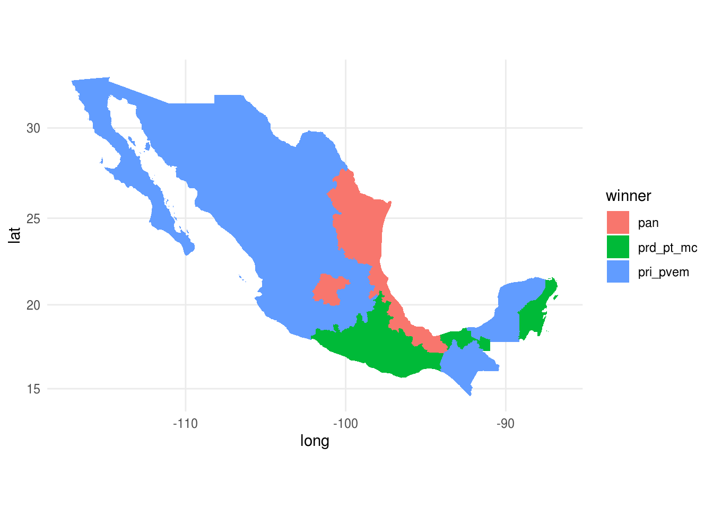
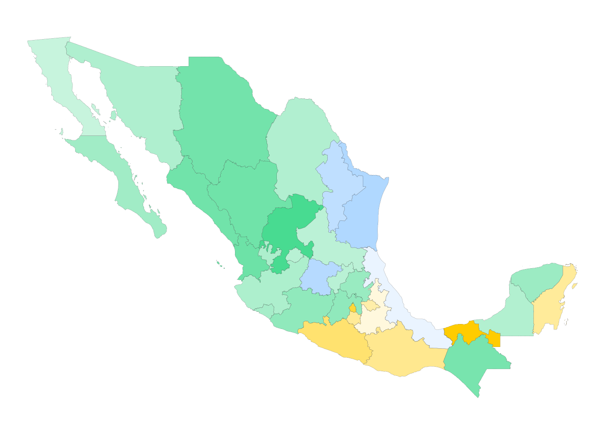
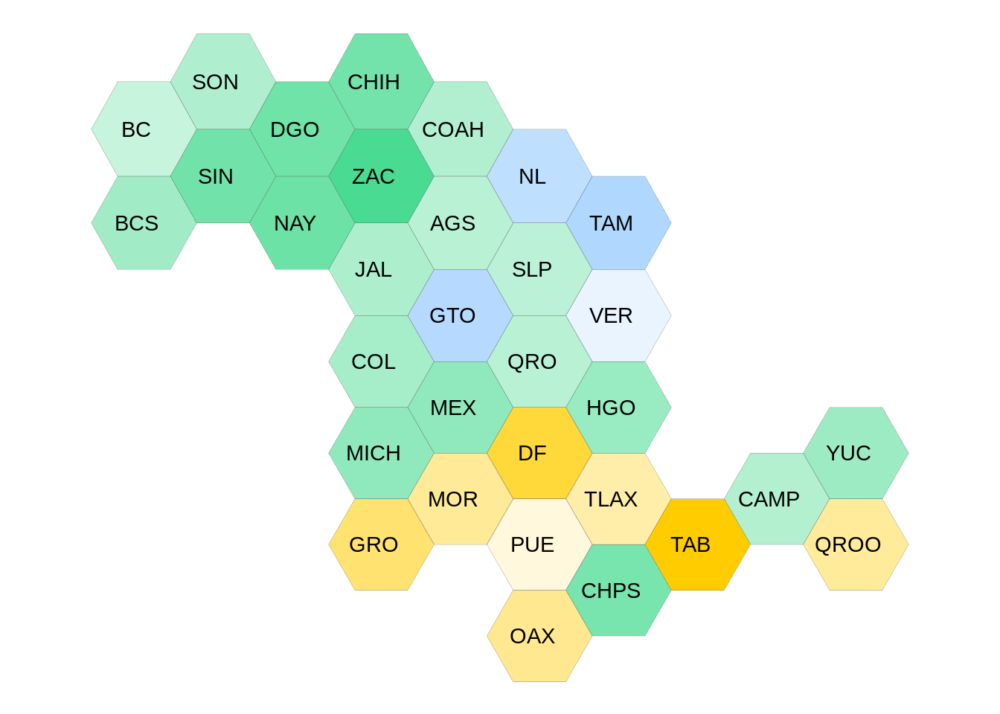

3.1 Transformación de datos
Estudiaremos las siguientes funciones:
- filter: obten un subconjunto de las filas de acuerdo a un criterio.
- select: selecciona columnas de acuerdo al nombre
- arrange: reordena las filas
- mutate: agrega nuevas variables
- summarise: reduce variables a valores (crear nuevas bases de datos con resúmenes de variables de la base original)
Estas funciones trabajan de manera similar, el primer argumento que reciben es un data frame, los argumentos que siguen indican que operación se va a efectuar y el resultado es un nuevo data frame.
Adicionalmente, se pueden usar con group_by que cambia el dominio de cada función, pasando de operar en el conjunto de datos completos a operar en grupos, esto lo veremos más adelante.
Datos
Usaremos datos de población municipal incluidos en el paquete mxmaps y
datos de educación, situación conyugal y hogar incluídos en el estcomp,
para tener acceso a ellos cargamos los paquetes correspondientes.
Una alternatica a instalar mxmaps es leer únicamente los datos, se descargan
del repositorio de GitHub y se cargan con la función load().
download.file("https://github.com/diegovalle/mxmaps/blob/master/data/df_mxmunicipio.RData?raw=true", "df_mxmunicipio.RData")
load("df_mxmunicipio.RData")Observemos la estructura de los datos:
df_mxmunicipio <- as_tibble(df_mxmunicipio)
glimpse(df_mxmunicipio)
#> Observations: 2,457
#> Variables: 18
#> $ state_code <chr> "01", "01", "01", "01", "01", "01", "01", "0…
#> $ municipio_code <chr> "001", "002", "003", "004", "005", "006", "0…
#> $ region <chr> "01001", "01002", "01003", "01004", "01005",…
#> $ state_name <chr> "Aguascalientes", "Aguascalientes", "Aguasca…
#> $ state_name_official <chr> "Aguascalientes", "Aguascalientes", "Aguasca…
#> $ state_abbr <chr> "AGS", "AGS", "AGS", "AGS", "AGS", "AGS", "A…
#> $ state_abbr_official <chr> "Ags.", "Ags.", "Ags.", "Ags.", "Ags.", "Ags…
#> $ municipio_name <chr> "Aguascalientes", "Asientos", "Calvillo", "C…
#> $ pop <int> 877190, 46464, 56048, 15577, 120405, 46473, …
#> $ pop_male <int> 425731, 22745, 27298, 7552, 60135, 22490, 26…
#> $ pop_female <int> 451459, 23719, 28750, 8025, 60270, 23983, 27…
#> $ afromexican <dbl> 532, 3, 10, 0, 32, 3, 13, 13, 4, 0, 43, 1139…
#> $ part_afromexican <dbl> 2791, 130, 167, 67, 219, 74, 578, 37, 59, 60…
#> $ indigenous <dbl> 104125, 1691, 7358, 2213, 8679, 6232, 6714, …
#> $ part_indigenous <dbl> 14209, 92, 2223, 191, 649, 251, 247, 84, 76,…
#> $ metro_area <chr> "Aguascalientes", NA, NA, NA, "Aguascaliente…
#> $ long <dbl> -102.29605, -102.08928, -102.71875, -102.300…
#> $ lat <dbl> 21.87982, 22.23832, 21.84691, 22.36641, 21.9…
glimpse(df_edu)
#> Observations: 7,371
#> Variables: 16
#> $ state_code <chr> "01", "01", "01", "01", "01", "01", "01", "01", "…
#> $ municipio_code <chr> "001", "001", "001", "002", "002", "002", "003", …
#> $ region <chr> "01001", "01001", "01001", "01002", "01002", "010…
#> $ state_name <chr> "Aguascalientes", "Aguascalientes", "Aguascalient…
#> $ state_abbr <chr> "AGS", "AGS", "AGS", "AGS", "AGS", "AGS", "AGS", …
#> $ municipio_name <chr> "Aguascalientes", "Aguascalientes", "Aguascalient…
#> $ sex <chr> "Total", "Hombres", "Mujeres", "Total", "Hombres"…
#> $ pop_15 <dbl> 631064, 301714, 329350, 31013, 14991, 16022, 3867…
#> $ no_school <dbl> 2.662329, 2.355211, 2.943677, 4.011221, 4.389300,…
#> $ preschool <dbl> 0.17335801, 0.17466873, 0.17215728, 0.25795634, 0…
#> $ elementary <dbl> 20.15247, 18.60073, 21.57401, 33.77938, 35.48129,…
#> $ secondary <dbl> 29.31145, 30.37976, 28.33278, 39.21259, 37.45581,…
#> $ highschool <dbl> 23.31824, 22.84912, 23.74799, 16.07068, 15.67607,…
#> $ higher_edu <dbl> 24.291989, 25.560299, 23.130105, 6.355399, 6.3571…
#> $ other <dbl> 0.09016518, 0.08020841, 0.09928647, 0.31277206, 0…
#> $ schoolyrs <dbl> 10.211152, 10.380144, 10.056383, 7.854005, 7.6920…Filtrar
Creamos una tabla de datos de juguete para mostrar el funcionamiento de cada instrucción:
df_ej <- tibble(genero = c("mujer", "hombre", "mujer", "mujer", "hombre"),
estatura = c(1.65, 1.80, 1.70, 1.60, 1.67))
df_ej
#> # A tibble: 5 x 2
#> genero estatura
#> <chr> <dbl>
#> 1 mujer 1.65
#> 2 hombre 1.8
#> 3 mujer 1.7
#> 4 mujer 1.6
#> 5 hombre 1.67El primer argumento de filter() es el nombre del data frame, los
subsecuentes son las expresiones que indican que filas filtrar.
filter(df_ej, genero == "mujer")
#> # A tibble: 3 x 2
#> genero estatura
#> <chr> <dbl>
#> 1 mujer 1.65
#> 2 mujer 1.7
#> 3 mujer 1.6
filter(df_ej, estatura > 1.65 & estatura < 1.75)
#> # A tibble: 2 x 2
#> genero estatura
#> <chr> <dbl>
#> 1 mujer 1.7
#> 2 hombre 1.67Algunos operadores importantes para filtrar son:
 Crea un subconjunto de los datos
Crea un subconjunto de los datos df_mxmunicipio que
contenga únicamente los municipios de la CDMX (state_abbr es CDMX)
Los municipios de Nuevo León con más de 200,000 habitantes.
Los municipios donde más de la mitad la población se autoidentifica como afromexicana o parte afromexicana.
Observación == y operadores booleanos
Debemos tener cuidado al usar ==, ¿qué devuelven las siguientes expresiones?
Los resultados de arriba se deben a que las computadoras usan aritmética de precisión finita:
Para estos casos es útil usar la función near()
Los operadores booleanos también son convenientes para filtrar:
El siguiente esquema nos ayuda a entender que hace cada operación, x está
representada por el círculo del lado izquierdo y y por el círculo del lado
derecho, la parte sombreada muestra las regiones que selecciona el operador:
.](img/transform-logical.png)
Figure 3.1: Operaciones booleanas, imagen del libro r4ds.
Asigna distintos valores a a y b y experimenta con
las operaciones booleanas (a <- TRUE; b <- FALSE).
Observación: faltantes NA
Un caso común es cuando se desea eliminar o localizar los registros con
faltantes en una o más columnas de las tablas de datos, en R los datos faltantes
se expresan como NA, para seleccionar los registros con faltante en la
variable schoolyrs de los datos df_edu resulta natural escribir:
filter(df_edu, schoolyrs == NA)
#> # A tibble: 0 x 16
#> # … with 16 variables: state_code <chr>, municipio_code <chr>,
#> # region <chr>, state_name <chr>, state_abbr <chr>,
#> # municipio_name <chr>, sex <chr>, pop_15 <dbl>, no_school <dbl>,
#> # preschool <dbl>, elementary <dbl>, secondary <dbl>, highschool <dbl>,
#> # higher_edu <dbl>, other <dbl>, schoolyrs <dbl>Y para eliminarlos
filter(df_edu, schoolyrs != NA)
#> # A tibble: 0 x 16
#> # … with 16 variables: state_code <chr>, municipio_code <chr>,
#> # region <chr>, state_name <chr>, state_abbr <chr>,
#> # municipio_name <chr>, sex <chr>, pop_15 <dbl>, no_school <dbl>,
#> # preschool <dbl>, elementary <dbl>, secondary <dbl>, highschool <dbl>,
#> # higher_edu <dbl>, other <dbl>, schoolyrs <dbl>en ambos casos nos devuelve una tabla vacía!
El problema resulta de usar los operadores == y !=, pensemos ¿qué regresan
las siguientes expresiones?
Las expresiones anteriores regresan NA, el hecho que la media de un vector
que incluye NAs o su suma regrese NAs se debe a que por defecto en R se
propagan los valores faltantes, esto es, si deconozco el valor de una de las
componentes de un vector, también desconozco la suma del mismo; sin embargo,
muchas funciones tienen un argumento na.rm para eliminarlos,
Aún queda pendiente como filtrarlos en una tabla, para esto veamos que el manejo de datos faltantes en R utiliza una lógica ternaria (como SQL):
La expresión anterior puede resultar confusa, una manera de pensar en esto es considerar los NA como no sé, por ejemplo si no se la edad de Juan y no se la edad de Esteban, la respuesta a ¿Juan tiene la misma edad que Esteban? es no sé (NA).
edad_Juan <- NA
edad_Esteban <- NA
edad_Juan == edad_Esteban
#> [1] NA
edad_Jose <- 32
# Juan es menor que José?
edad_Juan < edad_Jose
#> [1] NAPor tanto para determinar si un valor es faltante usamos la instrucción
is.na().
Y finalmente podemos filtrar,
Seleccionar
Elegir columnas de un conjunto de datos.
df_ej
#> # A tibble: 5 x 2
#> genero estatura
#> <chr> <dbl>
#> 1 mujer 1.65
#> 2 hombre 1.8
#> 3 mujer 1.7
#> 4 mujer 1.6
#> 5 hombre 1.67
select(df_ej, genero)
#> # A tibble: 5 x 1
#> genero
#> <chr>
#> 1 mujer
#> 2 hombre
#> 3 mujer
#> 4 mujer
#> 5 hombre
select(df_ej, -genero)
#> # A tibble: 5 x 1
#> estatura
#> <dbl>
#> 1 1.65
#> 2 1.8
#> 3 1.7
#> 4 1.6
#> 5 1.67 Ve la ayuda de select (?select) y escribe tres
maneras de seleccionar las variables del estado.
Ordenar
Ordenar de acuerdo al valor de una o más variables:
arrange(df_ej, genero)
#> # A tibble: 5 x 2
#> genero estatura
#> <chr> <dbl>
#> 1 hombre 1.8
#> 2 hombre 1.67
#> 3 mujer 1.65
#> 4 mujer 1.7
#> 5 mujer 1.6
arrange(df_ej, desc(estatura))
#> # A tibble: 5 x 2
#> genero estatura
#> <chr> <dbl>
#> 1 hombre 1.8
#> 2 mujer 1.7
#> 3 hombre 1.67
#> 4 mujer 1.65
#> 5 mujer 1.6 Ordena los municipios por población, de mayor a
menor.
¿Cuáles son los municipios con mayor disparidad de sexo (a total)?
¿Cuáles son los municipios con mayor disparidad de sexo (proporcional)?, elimina los municipios con menos de 5000 habitantes y repite.
Mutar
Mutar consiste en crear nuevas variables aplicando una función a columnas existentes:
mutate(df_ej, estatura_cm = estatura * 100)
#> # A tibble: 5 x 3
#> genero estatura estatura_cm
#> <chr> <dbl> <dbl>
#> 1 mujer 1.65 165
#> 2 hombre 1.8 180
#> 3 mujer 1.7 170
#> 4 mujer 1.6 160
#> 5 hombre 1.67 167
mutate(df_ej, estatura_cm = estatura * 100, estatura_in = estatura_cm * 0.3937)
#> # A tibble: 5 x 4
#> genero estatura estatura_cm estatura_in
#> <chr> <dbl> <dbl> <dbl>
#> 1 mujer 1.65 165 65.0
#> 2 hombre 1.8 180 70.9
#> 3 mujer 1.7 170 66.9
#> 4 mujer 1.6 160 63.0
#> 5 hombre 1.67 167 65.7 Calcula el porcentaje de población indígena de cada
municipio y almacenalo en una nueva variable.
Crea una nueva variable que muestre el cociente entre la población femenina y masculina.
Hay muchas funciones que podemos usar para crear nuevas variables con mutate(), éstas deben cumplir ser funciones vectorizadas, es decir, reciben un vector de valores y devuelven un vector de la misma dimensión.
Summarise y resúmenes por grupo
Summarise sirve para crear nuevas bases de datos con resúmenes o agregaciones de los datos originales.
La mayor utlidad de summarise es cuando la combinamos con una variable de
agrupación y esta combinación es la estrategia separa-aplica combina.
Separa-aplica-combina (split-apply-combine)
Muchos problemas de análisis de datos involucran la aplicación de la estrategia separa-aplica-combina (Wickham 2011), esta consiste en romper un problema en pedazos (de acuerdo a una variable de interés), operar sobre cada subconjunto de manera independiente (ej. calcular la media de cada grupo, ordenar observaciones por grupo, estandarizar por grupo) y después unir los pedazos nuevamente. El siguiente diagrama ejemplifiaca el paradigma de divide-aplica-combina:
- Separa la base de datos original.
- Aplica funciones a cada subconjunto.
- Combina los resultados en una nueva base de datos.

Ahora, cuando pensamos como implementar la estrategia divide-aplica-combina es
natural pensar en iteraciones, por ejemplo utilizar un ciclo for para recorrer cada grupo de interés y aplicar las funciones resumen, sin embargo la aplicación
de ciclos for desemboca en código difícil de entender por lo que preferimos
trabajar con funciones creadas para estas tareas, usaremos el paquete
dplyr que además de ser más claro suele ser más veloz.
Podemos hacer resúmenes por grupo, primero creamos una base de datos agrupada:
by_genero <- group_by(df_ej, genero)
by_genero
#> # A tibble: 5 x 2
#> # Groups: genero [2]
#> genero estatura
#> <chr> <dbl>
#> 1 mujer 1.65
#> 2 hombre 1.8
#> 3 mujer 1.7
#> 4 mujer 1.6
#> 5 hombre 1.67y después operamos sobre cada grupo, creando un resumen a nivel grupo y uniendo los subconjuntos en una base nueva:
summarise(by_genero, promedio = mean(estatura))
#> # A tibble: 2 x 2
#> genero promedio
#> <chr> <dbl>
#> 1 hombre 1.74
#> 2 mujer 1.65 Calcula la población total por estado.
Calcula la población total, indígena y afromexicana
por estado.
¿Qué otros resúmenes puedes hacer para explorar?
- Algunas funciones útiles con summarise son min(x), median(x), max(x), quantile(x, p), n(), sum(x), sum(x > 1), mean(x > 1), sd(x).
Por ejemplo, para cada área metropolitana: cuántos municipios engloba (n()),
la población total (sum()) y al estado al que pertenece (first()).
Operador pipeline
En R cuando uno hace varias operaciones es difícil leer y entender el código:
library(estcomp)
summarise(group_by(filter(election_2012, !is.na(section_type)), region,
section_type), n = n(), pri_pvem = sum(pri_pvem),
prd_pt_mc = sum(prd_pt_mc), pan = sum(pan))
#> # A tibble: 24 x 6
#> # Groups: region [8]
#> region section_type n pri_pvem prd_pt_mc pan
#> <chr> <chr> <int> <int> <int> <int>
#> 1 centronorte M 2071 331221 143225 228112
#> 2 centronorte R 5049 651507 211524 447886
#> 3 centronorte U 8940 1229241 653540 1171415
#> 4 centrosur M 1839 324327 277470 126264
#> 5 centrosur R 2541 495288 223978 181755
#> 6 centrosur U 27515 3698793 4765575 1936586
#> 7 este M 3158 462510 370352 306124
#> 8 este R 6768 905078 521793 654839
#> 9 este U 11403 1373876 1602217 1179497
#> 10 noreste M 1259 176191 77062 169285
#> # … with 14 more rowsLa dificultad radica en que usualmente los parámetros se asignan después del
nombre de la función usando (). El operador Forward Pipe (%>%) cambia este orden, de manera que un parámetro que precede a la función es enviado ("piped") a la función:x %>% f(y)se vuelvef(x,y),x %>% f(y) %>% g(z)se vuelveg(f(x, y), z)`. Es así que podemos reescribir el código para poder leer las
operaciones que vamos aplicando de izquierda a derecha
y de arriba hacia abajo.
Veamos como cambia el código anterior:
election_2012 %>%
filter(!is.na(section_type)) %>%
group_by(region, section_type) %>%
summarise(
n = n(),
pri_pvem = sum(pri_pvem),
prd_pt_mc = sum(prd_pt_mc),
pan = sum(pan)
)
#> # A tibble: 24 x 6
#> # Groups: region [8]
#> region section_type n pri_pvem prd_pt_mc pan
#> <chr> <chr> <int> <int> <int> <int>
#> 1 centronorte M 2071 331221 143225 228112
#> 2 centronorte R 5049 651507 211524 447886
#> 3 centronorte U 8940 1229241 653540 1171415
#> 4 centrosur M 1839 324327 277470 126264
#> 5 centrosur R 2541 495288 223978 181755
#> 6 centrosur U 27515 3698793 4765575 1936586
#> 7 este M 3158 462510 370352 306124
#> 8 este R 6768 905078 521793 654839
#> 9 este U 11403 1373876 1602217 1179497
#> 10 noreste M 1259 176191 77062 169285
#> # … with 14 more rowspodemos leer %>% como “después”.
¿Qué estados tienen la mayor participación (del
total de votantes en la lista nominal cuantos asistieron? Tip: debes eliminar
las casillas especiales pues la lista nominal no está definida.
Variables por grupo
En ocasiones es conveniente crear variables por grupo, por ejemplo estandarizar dentro de cada grupo z = (x - mean(x)) / sd(x).
Veamos un ejemplo:
z_prd_pt_mc_state <- election_2012 %>%
filter(total > 50, !is.na(section_type)) %>%
mutate(prd_pt_mc_pct = prd_pt_mc / total) %>%
group_by(state_abbr) %>%
mutate(
n = n(),
sd_prd_pt_mc = sd(prd_pt_mc_pct),
mean_prd_pt_mc = mean(prd_pt_mc_pct),
z_prd_pt_mc = (prd_pt_mc_pct - mean_prd_pt_mc) / sd_prd_pt_mc
)Verbos de dos tablas
Muchas veces debemos reunir información que está almacenada a lo largo de
muchas tablas, por ejemplo, si nos interesa conocer como se relaciona el año de
escolaridad promedio (schoolyrs en el tibble df_edu) con el porcentaje de
población indígena (indigenous en df_mxmunicipios), debemos poder pegar
las dos tablas.
Hay varias maneras de unir dos bases de datos y debemos pensar en el obejtivo:
x <- tibble(name = c("John", "Paul", "George", "Ringo", "Stuart", "Pete"),
instrument = c("guitar", "bass", "guitar", "drums", "bass",
"drums"))
y <- tibble(name = c("John", "Paul", "George", "Ringo", "Brian"),
band = c("TRUE", "TRUE", "TRUE", "TRUE", "FALSE"))
x
#> # A tibble: 6 x 2
#> name instrument
#> <chr> <chr>
#> 1 John guitar
#> 2 Paul bass
#> 3 George guitar
#> 4 Ringo drums
#> 5 Stuart bass
#> 6 Pete drums
y
#> # A tibble: 5 x 2
#> name band
#> <chr> <chr>
#> 1 John TRUE
#> 2 Paul TRUE
#> 3 George TRUE
#> 4 Ringo TRUE
#> 5 Brian FALSE
inner_join(x, y)
#> Joining, by = "name"
#> # A tibble: 4 x 3
#> name instrument band
#> <chr> <chr> <chr>
#> 1 John guitar TRUE
#> 2 Paul bass TRUE
#> 3 George guitar TRUE
#> 4 Ringo drums TRUE
left_join(x, y)
#> Joining, by = "name"
#> # A tibble: 6 x 3
#> name instrument band
#> <chr> <chr> <chr>
#> 1 John guitar TRUE
#> 2 Paul bass TRUE
#> 3 George guitar TRUE
#> 4 Ringo drums TRUE
#> 5 Stuart bass <NA>
#> 6 Pete drums <NA>
semi_join(x, y)
#> Joining, by = "name"
#> # A tibble: 4 x 2
#> name instrument
#> <chr> <chr>
#> 1 John guitar
#> 2 Paul bass
#> 3 George guitar
#> 4 Ringo drums
anti_join(x, y)
#> Joining, by = "name"
#> # A tibble: 2 x 2
#> name instrument
#> <chr> <chr>
#> 1 Stuart bass
#> 2 Pete drumsResumamos lo que observamos arriba:
| Tipo | Acción |
|---|---|
| inner | Incluye únicamente las filas que aparecen tanto en x como en y |
| left | Incluye todas las filas en x y las filas de y que coincidan |
| semi | Incluye las filas de x que coincidan con y |
| anti | Incluye las filas de x que no coinciden con y |
Ahora tu turno, ¿cómo se relacionan los años de
escolaridad con el porcentaje de población indígena. Utiliza los datos
df_mxmunicipio y df_edu para explorar la relación. ¿cuál es el join
adecuado? ¿de qué tamaño serán los datos finales?
glimpse(df_edu)
#> Observations: 7,371
#> Variables: 16
#> $ state_code <chr> "01", "01", "01", "01", "01", "01", "01", "01", "…
#> $ municipio_code <chr> "001", "001", "001", "002", "002", "002", "003", …
#> $ region <chr> "01001", "01001", "01001", "01002", "01002", "010…
#> $ state_name <chr> "Aguascalientes", "Aguascalientes", "Aguascalient…
#> $ state_abbr <chr> "AGS", "AGS", "AGS", "AGS", "AGS", "AGS", "AGS", …
#> $ municipio_name <chr> "Aguascalientes", "Aguascalientes", "Aguascalient…
#> $ sex <chr> "Total", "Hombres", "Mujeres", "Total", "Hombres"…
#> $ pop_15 <dbl> 631064, 301714, 329350, 31013, 14991, 16022, 3867…
#> $ no_school <dbl> 2.662329, 2.355211, 2.943677, 4.011221, 4.389300,…
#> $ preschool <dbl> 0.17335801, 0.17466873, 0.17215728, 0.25795634, 0…
#> $ elementary <dbl> 20.15247, 18.60073, 21.57401, 33.77938, 35.48129,…
#> $ secondary <dbl> 29.31145, 30.37976, 28.33278, 39.21259, 37.45581,…
#> $ highschool <dbl> 23.31824, 22.84912, 23.74799, 16.07068, 15.67607,…
#> $ higher_edu <dbl> 24.291989, 25.560299, 23.130105, 6.355399, 6.3571…
#> $ other <dbl> 0.09016518, 0.08020841, 0.09928647, 0.31277206, 0…
#> $ schoolyrs <dbl> 10.211152, 10.380144, 10.056383, 7.854005, 7.6920…
glimpse(df_mxmunicipio)
#> Observations: 2,457
#> Variables: 18
#> $ state_code <chr> "01", "01", "01", "01", "01", "01", "01", "0…
#> $ municipio_code <chr> "001", "002", "003", "004", "005", "006", "0…
#> $ region <chr> "01001", "01002", "01003", "01004", "01005",…
#> $ state_name <chr> "Aguascalientes", "Aguascalientes", "Aguasca…
#> $ state_name_official <chr> "Aguascalientes", "Aguascalientes", "Aguasca…
#> $ state_abbr <chr> "AGS", "AGS", "AGS", "AGS", "AGS", "AGS", "A…
#> $ state_abbr_official <chr> "Ags.", "Ags.", "Ags.", "Ags.", "Ags.", "Ags…
#> $ municipio_name <chr> "Aguascalientes", "Asientos", "Calvillo", "C…
#> $ pop <int> 877190, 46464, 56048, 15577, 120405, 46473, …
#> $ pop_male <int> 425731, 22745, 27298, 7552, 60135, 22490, 26…
#> $ pop_female <int> 451459, 23719, 28750, 8025, 60270, 23983, 27…
#> $ afromexican <dbl> 532, 3, 10, 0, 32, 3, 13, 13, 4, 0, 43, 1139…
#> $ part_afromexican <dbl> 2791, 130, 167, 67, 219, 74, 578, 37, 59, 60…
#> $ indigenous <dbl> 104125, 1691, 7358, 2213, 8679, 6232, 6714, …
#> $ part_indigenous <dbl> 14209, 92, 2223, 191, 649, 251, 247, 84, 76,…
#> $ metro_area <chr> "Aguascalientes", NA, NA, NA, "Aguascaliente…
#> $ long <dbl> -102.29605, -102.08928, -102.71875, -102.300…
#> $ lat <dbl> 21.87982, 22.23832, 21.84691, 22.36641, 21.9…Si queremos un mapa del ganador de las elecciones por estado debemos unir los
datos de elecciones con datos geográficos, estos estan incluídos en mxmaps,
son mxstate.map.
election_2012_state <- election_2012 %>%
group_by(state_code) %>%
summarise(
pri_pvem = 100 * sum(pri_pvem) / sum(total),
pan = 100 * sum(pan) / sum(total),
prd_pt_mc = 100 * sum(prd_pt_mc) / sum(total)
) %>%
mutate(winner = case_when(
pri_pvem > pan & pri_pvem > prd_pt_mc ~ "pri_pvem",
pan > pri_pvem & pan > prd_pt_mc ~ "pan",
TRUE ~ "prd_pt_mc"),
winner_pct = pmax(pri_pvem, pan, prd_pt_mc))
election_map <- mxstate.map %>%
left_join(election_2012_state, by = c("region" = "state_code"))
ggplot(election_map, aes(long, lat, group=group)) +
geom_polygon(aes(fill = winner)) +
coord_map()
Podemos especificar el color de cada categoría y la intensidad puede variar de acuerdo al porcentaje de votos que se llevó el partido/alianza ganador.
ggplot(election_map, aes(long, lat, group = group)) +
geom_polygon(aes(fill = winner, alpha = winner_pct), color = "#666666",
size = .05, show.legend = FALSE) +
coord_map() +
scale_fill_manual(values = c("prd_pt_mc" = "#FFCC00", "pan" = "#3399FF",
"pri_pvem" = "#00CD66")) +
theme_void()
election_hexbinmap <- mxhexbin.map %>%
left_join(election_2012_state, by = c("region" = "state_code"))
state_labels_map <- mxhexbin.map %>%
group_by(state_abbr) %>%
summarise(long = mean(long), lat = mean(lat), group = first(group))
ggplot(election_hexbinmap, aes(long, lat, group = group)) +
geom_polygon(aes(fill = winner, alpha = winner_pct), color = "#666666",
size = .05, show.legend = FALSE) +
coord_map() +
scale_fill_manual(values = c("prd_pt_mc" = "#FFCC00", "pan" = "#3399FF",
"pri_pvem" = "#00CD66")) +
geom_text(data = state_labels_map, aes(long, lat, label = state_abbr)) +
theme_void()
Genera un mapa a nivel municipo que muestre el porcentaje
de la población casada a total (mayores de 12 años).
Referencias
Wickham, Hadley. 2011. “The Split-Apply-Combine Strategy for Data Analysis.” Journal of Statistical Software 40 (1):1–29. http://www.jstatsoft.org/v40/i01/.